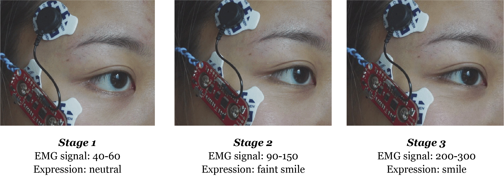
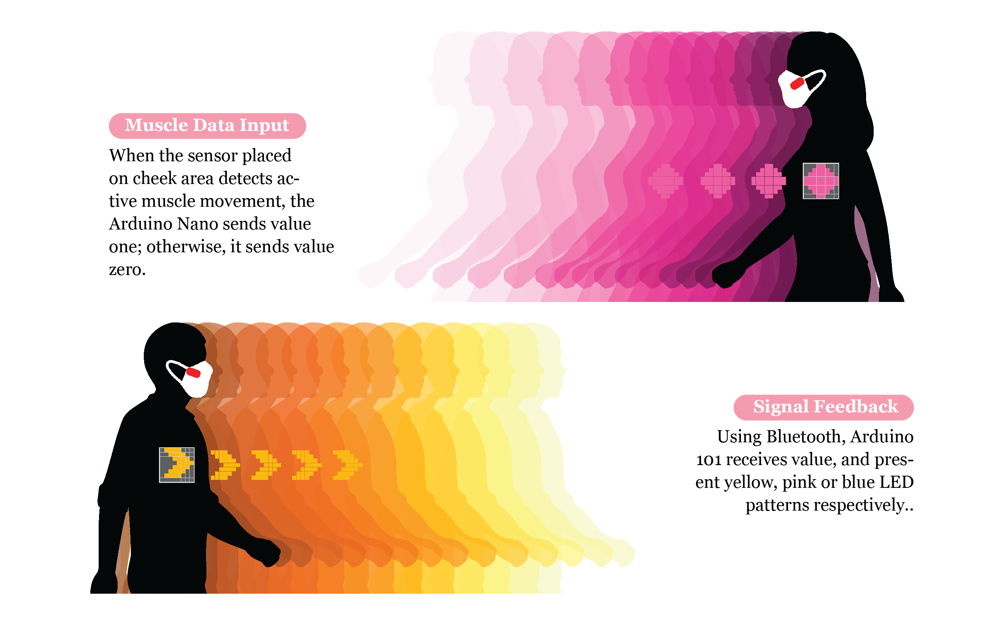

Context: 2020 has been a year of a huge tremble. The COVID-19 wasn't the first global pandemic,
and it won't be the last one. Our generation might have to face new "norms" of living in the near future:
social distancing rules, remote learning and working, and wearing protective gear such as masks.
When is the next global catastrophic tremble? How our life will be if one-day humans have to cocoon
themselves with masks and gloves to survive?
Goal: We are already living in one of these realities where seeing each other's face is a
luxury and we already lost one essential norm: the ability to communicate with one and another
through facial emotional expressions. Therefore I created Wear Your Smile to emphasize the gesture
of smiling as an important part of community bonding.
Firstly, I tested with MyoWare Muscle Sensor touching the cheek to detect the movement of smiling. I found out that the zygomaticus major muscle is a muscle of of facial expression which draws the angle of the mouth to allow one to smile. By placing the electrodes along the muscle, electric impulses that result in muscle activation are detected. It offers me accurate data when a smile activity takes place.

Zygomaticus Muscle diagram
Measuring muscle activation via electric potential, referred to as electromyography (EMG), has been traditionally used for medical research and diagnosis of neuromuscular disorders.
I tested with MyoWare Muscle Sensor touching the cheek to detect the movement of smiling by:
a. cleaning the target muscle area;
b. applying the electrodes in the direction of the muscle;
c. placing the reference electrode near targeted muscle;
d. connecting to Arduino;
Based on the EMG signal output, I get to examine the ac- tivation of the zygomaticus major muscle when I smile, and divide the activity into 3 stages:

I built the smile detecting system on a facial mask, and a LED signal expression system on a t-shirt
with conductive thread and sewable electronics. When a smile is detected by the mask, the sensory data
is wirelessly sent to the t-shirt. I designed 3 LED patterns to express the moments of 'not smiling', 'smiling' and 'total smiling time':


Wear Your Smile allows us to show emotions, bring meanings to digital fabracation, and signals our
friendliness in a global pandemic time.
It helps us to rethink the social significance of our emotional expressions, and also how fashion technology
is offering us a new perspective of unique identity.